Heirarchical / Mixed Effects
A tutorial on count regression
Bruce Campbell
25 July, 2019
count-regression-hierarchical-mixedeffects-vignette.RmdLinear Mixed Effects
Mixed-effects or mixed models have covariates with both fixed and random effects. The values for at least one set of effects (intercepts and/or slopes) to come from a normal distribution.This is what the random-effects assumption means. A close examination of how such a dataset can be simulated will help us better understand how real datasets are estimated down using mixed models. Very few strategies can be more effective to understand this type of mixed model than the combination of simulating data sets and describing the models fitted.
Model Types
- random intercepts only
- independent random intercepts and slopes
- correlated random intercepts and slopes
- modeling 2 correlated random effects with a scaled Inverse Wishart instead
- general correlated random effects with a scaled Inverse Wishart
n_subjects <- 56 # Number of subjects
n_sample <- 10 # Number of observations for each subject
n_obs <- n_subjects * n_sample # Total number of data points
subjects <- gl(n = n_subjects, k = n_sample) # Indicator for subjects
# Continuous predictor x
original_x <- runif(n_obs, 45, 70)
# standardize it
mean_orig_x <- mean(original_x)
sd_orig_x <- sd(original_x)
x <- (original_x - mean_orig_x)/sd_orig_x
summary(x) Min. 1st Qu. Median Mean 3rd Qu. Max.
-1.7807 -0.8637 0.1005 0.0000 0.8950 1.7092 hist(x, col = "lightsteelblue1", border = "white", breaks = 10, freq = FALSE)
lines(density(x), col = "lightsteelblue3", lwd = 2)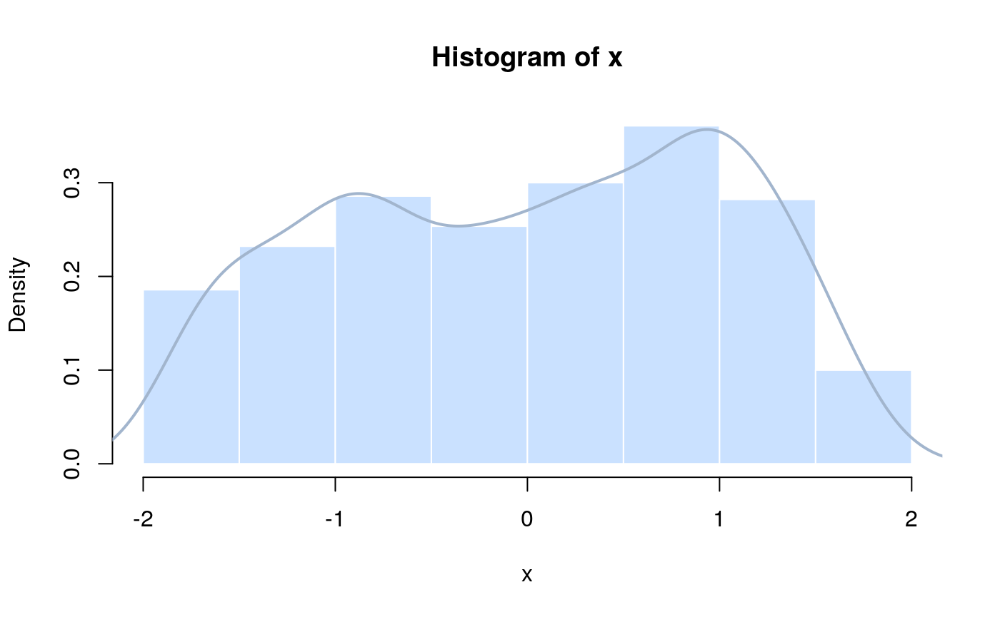
# This is the model matrix for the means parametrization of the interaction
# model between the subjects and the continuous covariate x
Xmat <- model.matrix(~subjects * x - 1 - x)Parameters for the distributions of the random coefficients / random effects (note that the intercepts and slopes comes from two independent Gaussian distributions)
intercept_mean <- 230 # mu_alpha
intercept_sd <- 20 # sigma_alpha
slope_mean <- 60 # mu_beta
slope_sd <- 30 # sigma_beta
# Generate the random coefficients:
intercept_effects <- rnorm(n = n_subjects, mean = intercept_mean, sd = intercept_sd)
slope_effects <- rnorm(n = n_subjects, mean = slope_mean, sd = slope_sd)
par(mfrow = c(1, 2))
hist(intercept_effects, col = "lightsteelblue1", border = "white", breaks = 10,
freq = FALSE)
lines(density(intercept_effects), col = "lightsteelblue3", lwd = 2)
hist(slope_effects, col = "lightsteelblue1", border = "white", breaks = 10,
freq = FALSE)
lines(density(slope_effects), col = "lightsteelblue3", lwd = 2)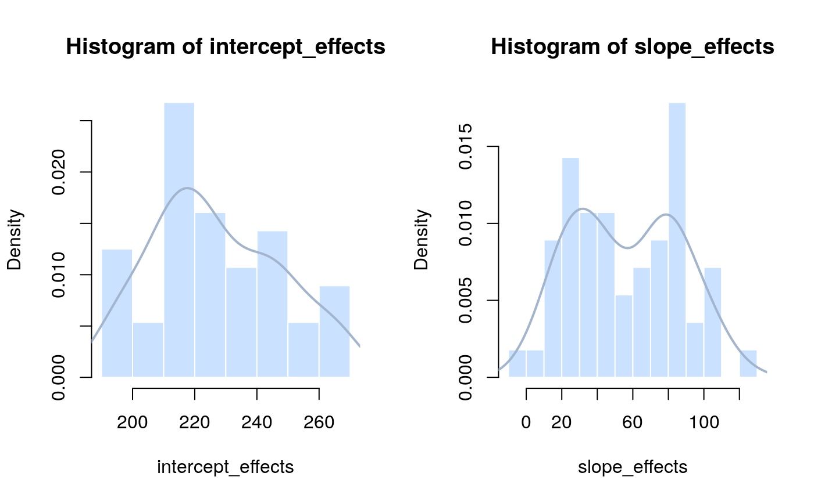
par(mfrow = c(1, 1))
all_effects <- c(intercept_effects, slope_effects) # Put them all together
# Generating the continuous response variable:
lin_pred <- Xmat %*% all_effects # Value of lin_predictor
str(lin_pred) num [1:560, 1] 79.2 58.2 320.2 147.3 234.1 ...
- attr(*, "dimnames")=List of 2
..$ : chr [1:560] "1" "2" "3" "4" ...
..$ : NULL# -- the stochastic part
sigma_res <- 30
normal_error <- rnorm(n = n_obs, mean = 0, sd = sigma_res) # residuals
y <- lin_pred + normal_error
# alternatively y <- rnorm(n = n_obs, mean = lin_pred, sd = sigma_res)
# We take a look at the response variable
hist(y, col = "lightsteelblue1", border = "white", breaks = 30, freq = FALSE)
lines(density(y), col = "lightsteelblue3", lwd = 2)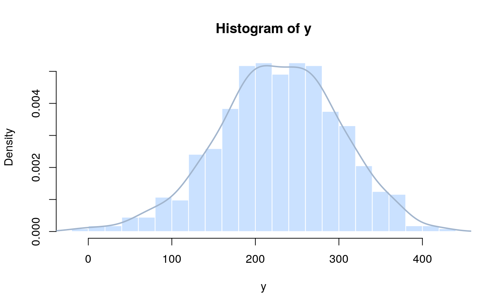
V1
Min. :-16.65
1st Qu.:181.62
Median :228.59
Mean :227.65
3rd Qu.:276.27
Max. :426.15 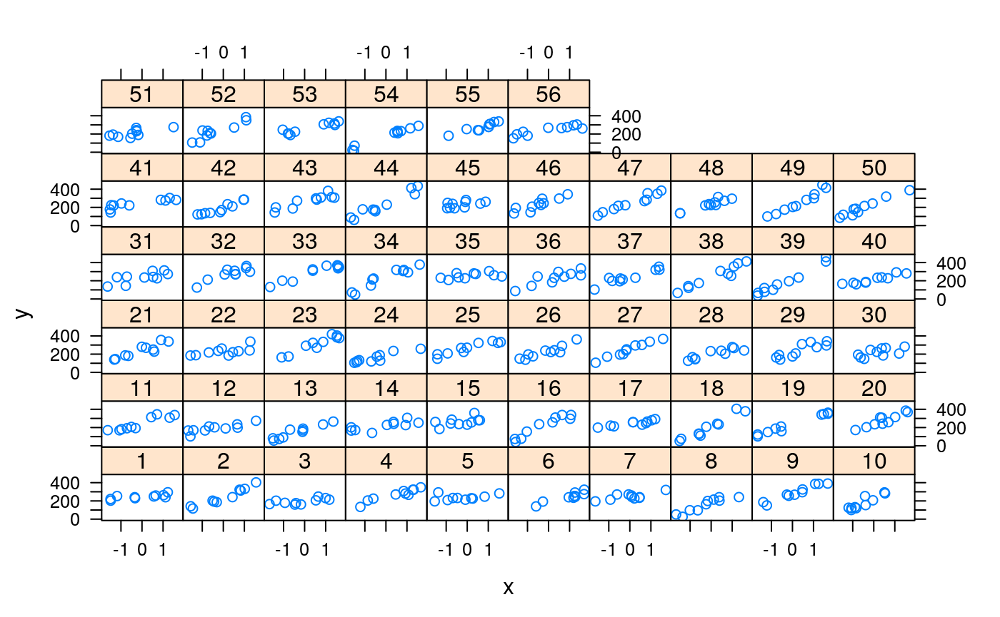
REML analysis using R lme4
Linear mixed model fit by REML ['lmerMod']
Formula: y ~ x + (1 | subjects)
REML criterion at convergence: 5836.124
Random effects:
Groups Name Std.Dev.
subjects (Intercept) 23.31
Residual 41.65
Number of obs: 560, groups: subjects, 56
Fixed Effects:
(Intercept) x
227.7 55.6 (Intercept) x
227.65177 55.59795 $subjects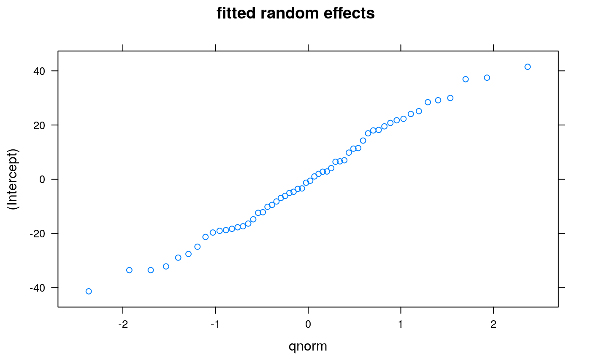
coef.re <- coef(lme_fit1)
plot(coef.re[[1]][, 1], coef.re[[1]][, 2], main = "Coefficients ", ylab = "(Intercept)",
xlab = "x")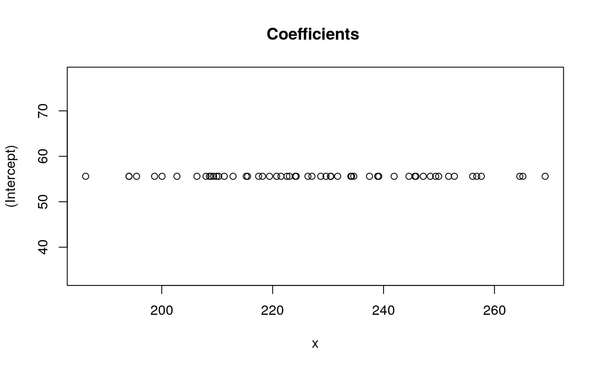
# Compare with true values:
data.frame(intercept_mean = intercept_mean, slope_mean = slope_mean, intercept_sd = intercept_sd,
slope_sd = slope_sd, sigma_res = sigma_res) intercept_mean slope_mean intercept_sd slope_sd sigma_res
1 230 60 20 30 30Linear mixed model fit by REML ['lmerMod']
Formula: y ~ x + (1 | subjects)
REML criterion at convergence: 5836.124
Random effects:
Groups Name Std.Dev.
subjects (Intercept) 23.31
Residual 41.65
Number of obs: 560, groups: subjects, 56
Fixed Effects:
(Intercept) x
227.7 55.6 Bayesian hierarchical analysis using JAGS
# Write model
cat("model {
# Priors
mu_int~dnorm(0, 0.0001) # Mean hyperparameter for random intercepts
sigma_int~dunif(0, 100) # SD hyperparameter for random intercepts
tau_int <- 1/(sigma_int*sigma_int)
for (i in 1:n_subj) {
alpha[i]~dnorm(mu_int, tau_int) # Random intercepts
}
beta~dnorm(0, 0.0001) # Common slope
sigma_res~dunif(0, 100) # Residual standard deviation
tau_res <- 1/(sigma_res*sigma_res)
# Likelihood
for (i in 1:n_obs) {
mu[i] <- alpha[subjects[i]]+beta*x[i] # Expectation
y[i]~dnorm(mu[i], tau_res) # The actual (random) responses
}
}",
fill = TRUE, file = "lme_model1.txt")
jags_data <- list(y = as.numeric(y), subjects = as.numeric(subjects), x = as.numeric(x),
n_subj = max(as.numeric(subjects)), n_obs = as.numeric(n_obs))
# use as.numeric across the board for the data passed to JAGS; it might work
# w/o it, but this is often needed for other BUGS packages
# Inits function
inits <- function() {
list(alpha = rnorm(n_subjects, 0, 2), beta = rnorm(1, 1, 1), mu_int = rnorm(1,
0, 1), sigma_int = rlnorm(1), sigma_res = rlnorm(1))
}
# Parameters to estimate
params <- c("alpha", "beta", "mu_int", "sigma_int", "sigma_res")
# MCMC settings
ni <- 11000
nb <- 1000
nt <- 20
nc <- 3
# Start Gibbs sampling
library("R2jags")
outj <- jags(jags_data, inits = inits, parameters.to.save = params, model.file = "lme_model1.txt",
n.thin = nt, n.chains = nc, n.burnin = nb, n.iter = ni)Compiling model graph
Resolving undeclared variables
Allocating nodes
Graph information:
Observed stochastic nodes: 560
Unobserved stochastic nodes: 60
Total graph size: 2870
Initializing modelout <- outj$BUGSoutput
# Compare with MLEs and true values
data.frame(intercept_mean = intercept_mean, slope_mean = slope_mean, intercept_sd = intercept_sd,
slope_sd = slope_sd, sigma_res = sigma_res) intercept_mean slope_mean intercept_sd slope_sd sigma_res
1 230 60 20 30 30$alpha
[1] 222.9 234.1 230.7 229.5 245.3 217.7 209.4 237.4 215.4 206.4 218.5
[12] 220.7 194.4 239.3 239.0 264.4 210.7 221.6 242.1 230.6 202.7 223.7
[23] 213.5 247.3 226.3 193.8 198.1 251.8 264.8 234.4 210.0 248.7 215.3
[34] 200.0 227.5 223.8 222.4 228.1 249.6 218.5 209.5 245.9 252.4 256.0
[45] 208.2 208.6 185.7 235.0 244.6 257.5 269.5 256.5 249.9 232.3 195.0
[56] 207.9
$beta
[1] 55.54
$deviance
[1] 5767
$mu_int
[1] 227.3
$sigma_int
[1] 23.87
$sigma_res
[1] 41.78Linear mixed model fit by REML ['lmerMod']
Formula: y ~ x + (1 | subjects)
REML criterion at convergence: 5836.124
Random effects:
Groups Name Std.Dev.
subjects (Intercept) 23.31
Residual 41.65
Number of obs: 560, groups: subjects, 56
Fixed Effects:
(Intercept) x
227.7 55.6 The same model can be parametrized by making the mean of the intercept ranefs a fixed effect and modeling the subject ranefs as coming from a normal distribution centered at 0. This is in fact how the lmer function models ranefs.
cat("model {
# Priors
sigma_int~dunif(0, 100) # SD hyperparameter for random intercepts
tau_int <- 1/(sigma_int*sigma_int)
for (i in 1:n_subj) {
alpha[i]~dnorm(0, tau_int) # Random by-subject deflections to the intercept
}
mu_int~dnorm(0, 0.0001) # The mean intercept
beta~dnorm(0, 0.0001) # Common slope
sigma_res~dunif(0, 100) # Residual standard deviation
tau_res <- 1/(sigma_res*sigma_res)
# Likelihood
for (i in 1:n_obs) {
mu[i] <- mu_int + alpha[subjects[i]] + beta*x[i] # Expectation
y[i]~dnorm(mu[i], tau_res) # The actual (random) responses
}
}",
fill = TRUE, file = "lme_model1_1.txt")
# Bundle data
jags_data <- list(y = as.numeric(y), subjects = as.numeric(subjects), x = as.numeric(x),
n_subj = max(as.numeric(subjects)), n_obs = as.numeric(n_obs))
# use as.numeric across the board for the data passed to JAGS; it might work
# w/o it, but this is often needed for other BUGS packages
# Inits function
inits <- function() {
list(alpha = rnorm(n_subjects, 0, 2), beta = rnorm(1, 1, 1), mu_int = rnorm(1,
0, 1), sigma_int = rlnorm(1), sigma_res = rlnorm(1))
}
# Parameters to estimate
params <- c("alpha", "beta", "mu_int", "sigma_int", "sigma_res")
# MCMC settings
ni <- 11000
nb <- 1000
nt <- 20
nc <- 3
# Start Gibbs sampling
library("R2jags")
outj <- jags(jags_data, inits = inits, parameters.to.save = params, model.file = "lme_model1_1.txt",
n.thin = nt, n.chains = nc, n.burnin = nb, n.iter = ni)Compiling model graph
Resolving undeclared variables
Allocating nodes
Graph information:
Observed stochastic nodes: 560
Unobserved stochastic nodes: 60
Total graph size: 2870
Initializing modelout <- outj$BUGSoutput
# Compare with MLEs and true values
data.frame(intercept_mean = intercept_mean, slope_mean = slope_mean, intercept_sd = intercept_sd,
slope_sd = slope_sd, sigma_res = sigma_res) intercept_mean slope_mean intercept_sd slope_sd sigma_res
1 230 60 20 30 30$alpha
[1] -4.7688 6.4754 3.2052 1.4666 17.7412 -9.8150 -17.6724
[8] 10.4953 -11.9445 -20.8244 -7.7176 -6.5470 -33.3224 12.1604
[15] 11.7383 37.1071 -15.9736 -6.0369 14.6778 3.4286 -24.9014
[22] -3.7411 -14.5913 20.0820 -0.8918 -33.5329 -28.8385 24.7047
[29] 37.4330 6.7121 -17.4807 20.9795 -12.4667 -27.4435 -0.3148
[36] -3.3117 -3.9846 1.4395 22.4318 -9.1106 -17.4010 18.6826
[43] 25.6325 28.6196 -18.6818 -19.1975 -41.1431 7.3613 17.9411
[50] 30.3922 41.6440 30.0820 22.7628 4.2200 -31.8723 -19.5805
$beta
[1] 55.69
$deviance
[1] 5768
$mu_int
[1] 227.3
$sigma_int
[1] 23.88
$sigma_res
[1] 41.8Linear mixed model fit by REML ['lmerMod']
Formula: y ~ x + (1 | subjects)
REML criterion at convergence: 5836.124
Random effects:
Groups Name Std.Dev.
subjects (Intercept) 23.31
Residual 41.65
Number of obs: 560, groups: subjects, 56
Fixed Effects:
(Intercept) x
227.7 55.6 Analysis under a random-coefficients model without correlation between intercept and slope
REML analysis using R’s lme4 - which extends nlme with additional respone and link options
Linear mixed model fit by REML ['lmerMod']
Formula: y ~ x + (1 | subjects) + (0 + x | subjects)
REML criterion at convergence: 5644.788
Random effects:
Groups Name Std.Dev.
subjects (Intercept) 23.42
subjects.1 x 29.45
Residual 30.67
Number of obs: 560, groups: subjects, 56
Fixed Effects:
(Intercept) x
228.50 54.52 (Intercept) x
228.49788 54.52382 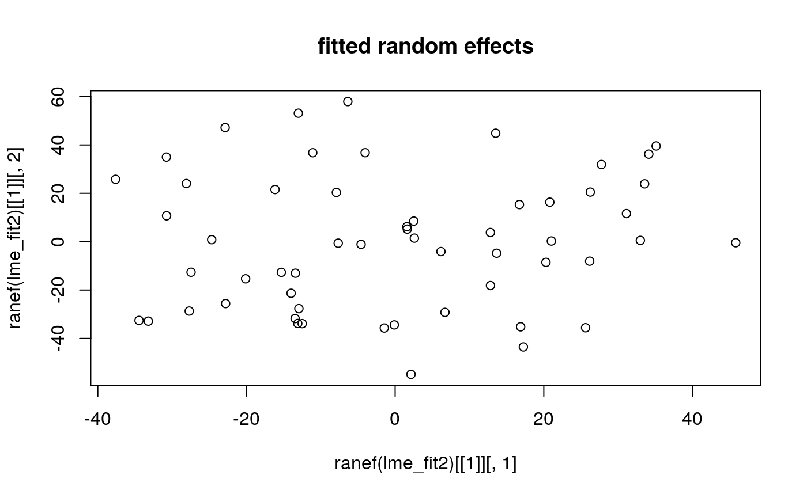
coef.re <- coef(lme_fit2)
plot(coef.re[[1]][, 1], coef.re[[1]][, 2], main = "Coefficients ", ylab = "(Intercept)",
xlab = "x")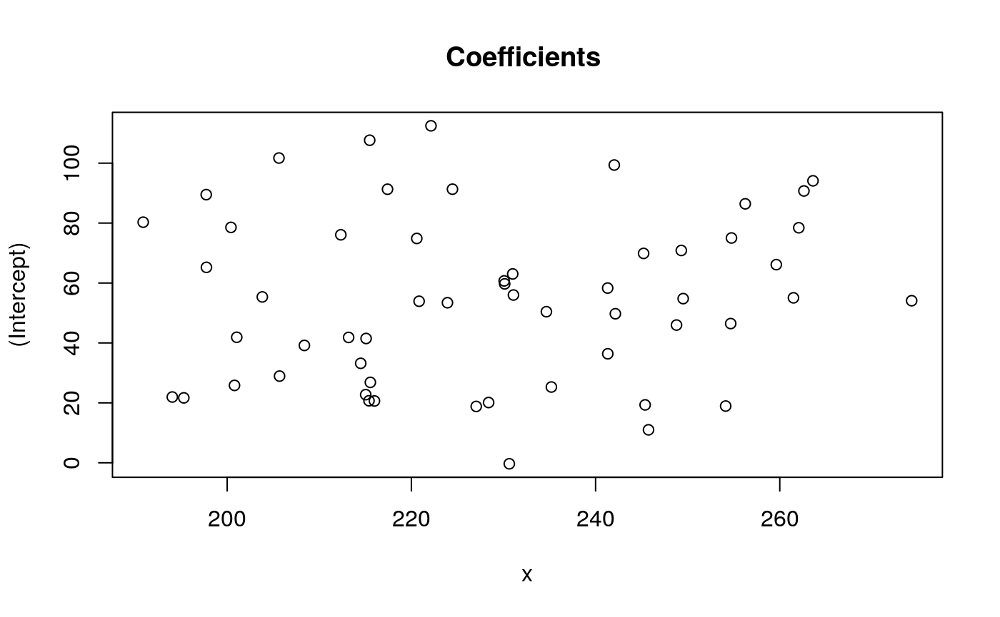
Linear mixed model fit by REML ['lmerMod']
Formula: y ~ x + (1 | subjects) + (0 + x | subjects)
REML criterion at convergence: 5644.788
Random effects:
Groups Name Std.Dev.
subjects (Intercept) 23.42
subjects.1 x 29.45
Residual 30.67
Number of obs: 560, groups: subjects, 56
Fixed Effects:
(Intercept) x
228.50 54.52 Bayesian analysis using JAGS of a random-coefficients model without correlation between intercept and slope
# Define model
cat("model {
# Priors
mu_int~dnorm(0, 0.001) # Mean hyperparameter for random intercepts
sigma_int~dunif(0, 100) # SD hyperparameter for random intercepts
tau_int <- 1/(sigma_int*sigma_int)
mu_slope~dnorm(0, 0.001) # Mean hyperparameter for random slopes
sigma_slope~dunif(0, 100) # SD hyperparameter for slopes
tau_slope <- 1/(sigma_slope*sigma_slope)
for (i in 1:n_subj) {
alpha[i]~dnorm(mu_int, tau_int) # Random intercepts
beta[i]~dnorm(mu_slope, tau_slope) # Random slopes
}
sigma_res~dunif(0, 100) # Residual standard deviation
tau_res <- 1/(sigma_res*sigma_res) # Residual precision
# Likelihood
for (i in 1:n_obs) {
mu[i] <- alpha[subjects[i]]+beta[subjects[i]]*x[i]
y[i]~dnorm(mu[i], tau_res)
}
}",
fill = TRUE, file = "lme_model2.txt")
# Bundle data
jags_data <- list(y = as.numeric(y), subjects = as.numeric(subjects), x = as.numeric(x),
n_subj = max(as.numeric(subjects)), n_obs = as.numeric(n_obs))
# Inits function
inits <- function() {
list(alpha = rnorm(n_subjects, 0, 2), beta = rnorm(n_subjects, 10, 2), mu_int = rnorm(1,
0, 1), sigma_int = rlnorm(1), mu_slope = rnorm(1, 0, 1), sigma_slope = rlnorm(1),
sigma_res = rlnorm(1))
}
# Parameters to estimate
params <- c("alpha", "beta", "mu_int", "sigma_int", "mu_slope", "sigma_slope",
"sigma_res")
# MCMC settings
ni <- 11000
nb <- 1000
nt <- 10
nc <- 3
# Start Gibbs sampling
library("R2jags")
outj <- jags(jags_data, inits = inits, parameters.to.save = params, model.file = "lme_model2.txt",
n.thin = nt, n.chains = nc, n.burnin = nb, n.iter = ni)Compiling model graph
Resolving undeclared variables
Allocating nodes
Graph information:
Observed stochastic nodes: 560
Unobserved stochastic nodes: 117
Total graph size: 2929
Initializing modelout <- outj$BUGSoutput
# Compare with MLEs and true values
data.frame(intercept_mean = intercept_mean, slope_mean = slope_mean, intercept_sd = intercept_sd,
slope_sd = slope_sd, sigma_res = sigma_res) intercept_mean slope_mean intercept_sd slope_sd sigma_res
1 230 60 20 30 30$alpha
[1] 224.0 245.1 230.1 229.6 240.9 212.1 200.5 234.6 214.5 203.3 215.0
[12] 220.4 197.2 240.9 245.5 262.2 212.8 222.0 241.9 229.6 200.4 223.4
[23] 214.3 249.0 230.3 194.7 196.7 261.8 255.7 241.7 205.0 254.4 214.9
[34] 205.4 226.8 220.2 214.8 230.6 263.3 215.6 208.0 244.7 254.3 254.0
[45] 215.1 217.2 190.4 227.9 248.9 261.4 274.1 259.1 247.9 234.0 193.4
[56] 200.0
$beta
[1] 91.0649 19.1176 55.4833 59.4941 35.8594 76.0443 25.6430
[8] 25.0486 22.4792 55.1824 20.1924 54.1182 89.1289 57.9554
[15] 11.0069 90.8977 41.7919 112.5433 49.6948 60.8054 41.9405
[22] 53.5698 33.1804 54.7705 -0.6149 21.6095 65.0140 78.0750
[29] 87.0969 99.3739 101.6179 46.0656 41.2710 28.9955 18.3479
[36] 74.7179 107.6608 62.7627 93.8596 20.4692 39.0700 69.9472
[43] 74.8928 18.4211 26.7645 91.4579 80.1806 19.7970 70.6321
[50] 55.1271 54.0865 66.1072 45.6299 50.4884 21.7348 78.5456
$deviance
[1] 5425
$mu_int
[1] 225.6
$mu_slope
[1] 53.44
$sigma_int
[1] 24.11
$sigma_res
[1] 30.74
$sigma_slope
[1] 30.18Linear mixed model fit by REML ['lmerMod']
Formula: y ~ x + (1 | subjects) + (0 + x | subjects)
REML criterion at convergence: 5644.788
Random effects:
Groups Name Std.Dev.
subjects (Intercept) 23.42
subjects.1 x 29.45
Residual 30.67
Number of obs: 560, groups: subjects, 56
Fixed Effects:
(Intercept) x
228.50 54.52 Using simulated data and successfully recovering the input values makes us fairly confident that the JAGS analysis has been correctly specified. This is very helpful for more complex models b/c it’s easy to make mistakes. A good way to check the JAGS analysis for a custom model that is needed for a particular phenomenon is to simulate the data and run the JAGS model on that data
The random-coefficients model with correlation between intercept and slope
n_subjects <- 56
n_sample <- 10
n_obs <- n_subjects * n_sample
subjects <- gl(n = n_subjects, k = n_sample)
# Standardized continuous covariate:
original_x <- runif(n_obs, 45, 70)
(mean_orig_x <- mean(original_x))[1] 57.97829sd_orig_x <- sd(original_x)
x <- (original_x - mean_orig_x)/sd_orig_x
hist(x, col = "lightsteelblue1", border = "white", breaks = 20, freq = FALSE)
lines(density(x), col = "lightsteelblue3", lwd = 2)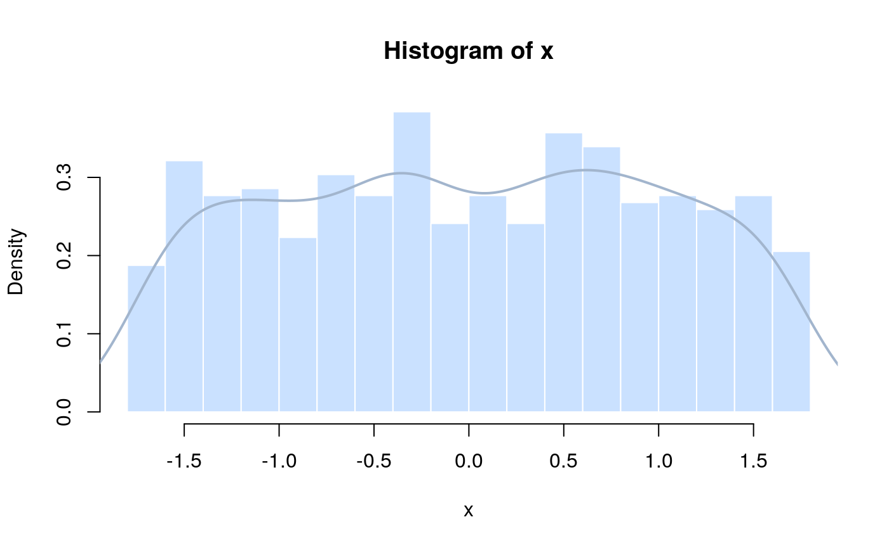
# Design matrix:
Xmat <- model.matrix(~subjects * x - 1 - x)
# Generate the correlated random effects for intercept and slope: Assembling
# the parameters for the multivariate normal distribution
intercept_mean <- 230 # Values for five hyperparameters
intercept_sd <- 20
slope_mean <- 60
slope_sd <- 30
intercept_slope_covariance <- 10
intercept_slope_correlation <- intercept_slope_covariance/(intercept_sd * slope_sd)
mu_vector <- c(intercept_mean, slope_mean)
var_covar_matrix <- matrix(c(intercept_sd^2, intercept_slope_covariance, intercept_slope_covariance,
slope_sd^2), 2, 2)
# Generating the correlated random effects for intercepts and slopes:
library("MASS") # Load MASS to sample from a multivariate normal
effects <- mvrnorm(n = n_subjects, mu = mu_vector, Sigma = var_covar_matrix)
## round(effects, 2)par(mar = c(1, 1, 1, 1))
par(mfrow = c(1, 2))
hist(effects[, 1], col = "lightsteelblue1", border = "white", breaks = 10, freq = FALSE)
lines(density(effects[, 1]), col = "lightsteelblue3", lwd = 2)
hist(effects[, 2], col = "lightsteelblue1", border = "white", breaks = 10, freq = FALSE)
lines(density(effects[, 2]), col = "lightsteelblue3", lwd = 2)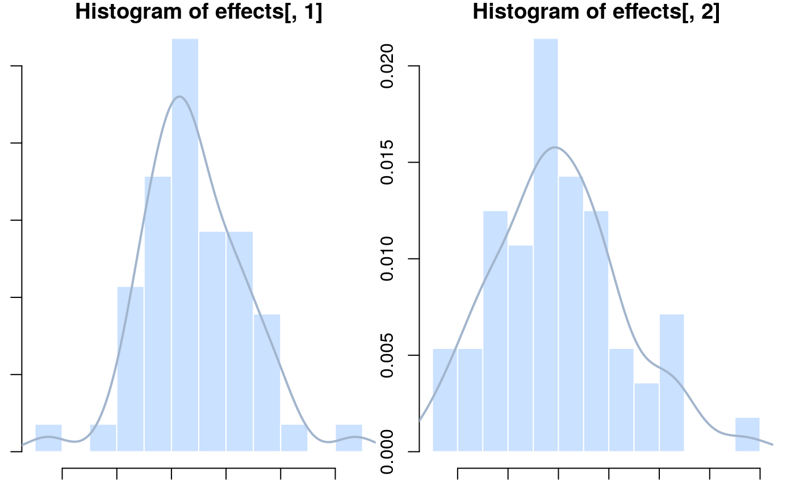
par(mfrow = c(1, 1))
# Plotting the bivariate distribution:
effects_kde <- kde2d(effects[, 1], effects[, 2], n = 50) # kernel density estimate
par(mfrow = c(1, 3))
contour(effects_kde)
image(effects_kde)
persp(effects_kde, phi = 45, theta = 30)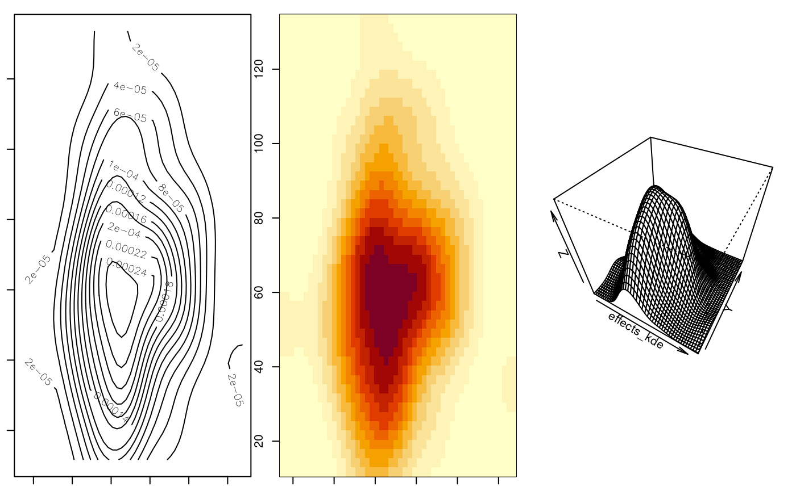
# even better:
par(mfrow = c(1, 2))
image(effects_kde)
contour(effects_kde, add = T)
persp(effects_kde, phi = 45, theta = -30, shade = 0.1, border = NULL, col = "lightsteelblue1",
ticktype = "detailed", xlab = "", ylab = "", zlab = "")
[1] 228.32068 60.04359[1] 18.57572 25.46711[1] 345.0575 648.5739[1] 21.22323 [,1] [,2]
[1,] 345.05750 21.22323
[2,] 21.22323 648.57387# Population parameters
data.frame(intercept_mean = intercept_mean, slope_mean = slope_mean, intercept_sd = intercept_sd,
slope_sd = slope_sd, intercept_slope_covariance = intercept_slope_covariance,
sigma_res = sigma_res) intercept_mean slope_mean intercept_sd slope_sd
1 230 60 20 30
intercept_slope_covariance sigma_res
1 10 30# Sampling error for intercept-slope covariance (200 samples of 50, 500,
# 5000 and 50000 group/random effects each) -- just to illustrate how
# difficult it is to estimate measures of association, even from fairly
# large data sets with 5000 observations:
par(mfrow = c(1, 4))
cov_temp1 <- numeric()
for (i in 1:200) {
temp1 <- mvrnorm(50, mu = mu_vector, Sigma = var_covar_matrix)
cov_temp1[i] <- var(temp1)[1, 2]
}
hist(cov_temp1, col = "lightsteelblue1", border = "white", freq = FALSE, main = "n_obs=50")
lines(density(cov_temp1), col = "lightsteelblue3", lwd = 2)
cov_temp2 <- numeric()
for (i in 1:200) {
temp2 <- mvrnorm(500, mu = mu_vector, Sigma = var_covar_matrix)
cov_temp2[i] <- var(temp2)[1, 2]
}
hist(cov_temp2, col = "lightsteelblue1", border = "white", freq = FALSE, main = "n_obs=500")
lines(density(cov_temp2), col = "lightsteelblue3", lwd = 2)
cov_temp3 <- numeric()
for (i in 1:200) {
temp3 <- mvrnorm(5000, mu = mu_vector, Sigma = var_covar_matrix)
cov_temp3[i] <- var(temp3)[1, 2]
}
hist(cov_temp3, col = "lightsteelblue1", border = "white", freq = FALSE, main = "n_obs=5000")
lines(density(cov_temp3), col = "lightsteelblue3", lwd = 2)
cov_temp4 <- numeric()
for (i in 1:200) {
temp4 <- mvrnorm(50000, mu = mu_vector, Sigma = var_covar_matrix)
cov_temp4[i] <- var(temp4)[1, 2]
}
hist(cov_temp4, col = "lightsteelblue1", border = "white", freq = FALSE, main = "n_obs=50000")
lines(density(cov_temp4), col = "lightsteelblue3", lwd = 2)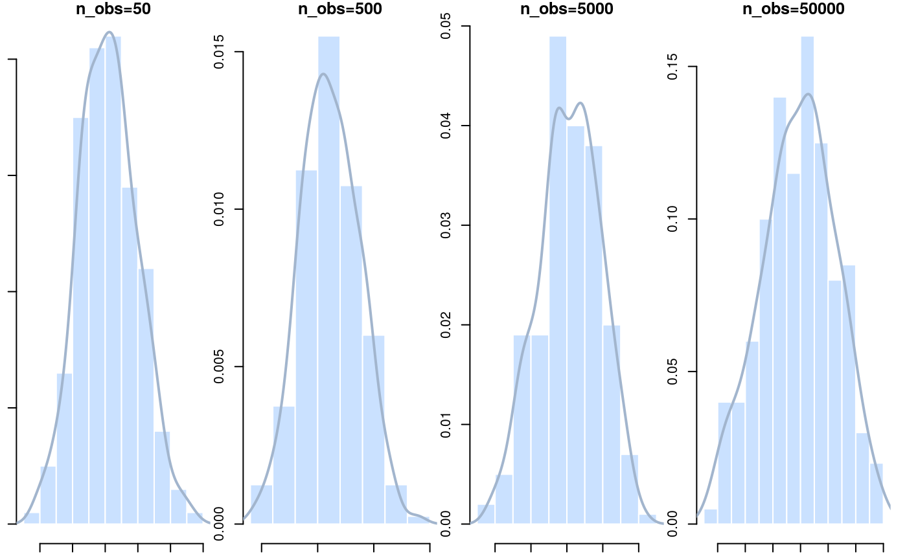
par(mfrow = c(1, 1))
intercept_effects <- effects[, 1]
## round(intercept_effects, 2)
slope_effects <- effects[, 2]
## round(slope_effects, 2)
all_effects <- c(intercept_effects, slope_effects) # Put them all together
## round(all_effects, 2)
# Generate the response variable: -- the deterministic part
lin_pred <- Xmat %*% all_effects
## round(as.vector(lin_pred), 2)
# -- the stochastic part
sigma_res <- 30
normal_error <- rnorm(n = n_obs, mean = 0, sd = sigma_res) # residuals
# -- add them together
y <- lin_pred + normal_error
# or, in one go:
y <- rnorm(n = n_obs, mean = lin_pred, sd = sigma_res)
hist(y, col = "lightsteelblue1", border = "white", breaks = 15, freq = FALSE)
lines(density(y), col = "lightsteelblue3", lwd = 2)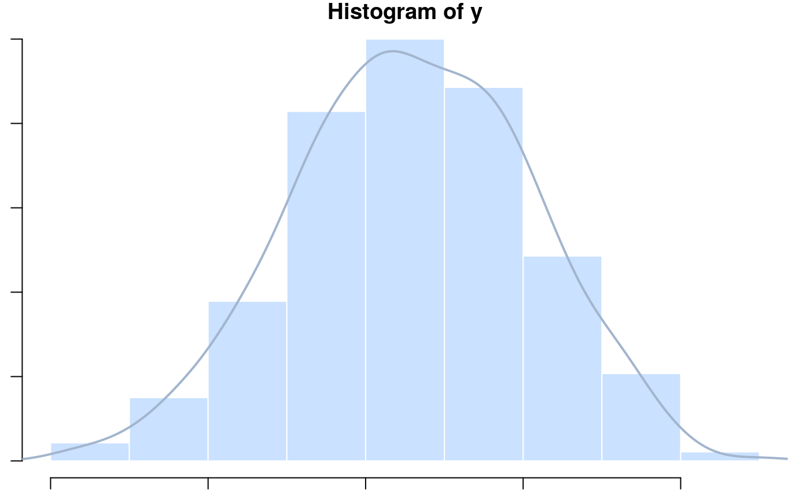

REML analysis using R
Linear mixed model fit by REML ['lmerMod']
Formula: y ~ x + (x | subjects)
REML criterion at convergence: 5597.869
Random effects:
Groups Name Std.Dev. Corr
subjects (Intercept) 18.03
x 24.94 -0.09
Residual 30.44
Number of obs: 560, groups: subjects, 56
Fixed Effects:
(Intercept) x
228.14 62.27 # Compare with the true values:
data.frame(intercept_mean = intercept_mean, slope_mean = slope_mean, intercept_sd = intercept_sd,
slope_sd = slope_sd, intercept_slope_correlation = intercept_slope_covariance/(intercept_sd *
slope_sd), sigma_res = sigma_res) intercept_mean slope_mean intercept_sd slope_sd
1 230 60 20 30
intercept_slope_correlation sigma_res
1 0.01666667 30Bayesian analysis using JAGS
This is one way in which we can specify a Bayesian analysis of the random-coefficients model with correlation. It is more intuitive but does not generalize well to more than 2 correlated random effects. We will introduce a different and more general way to allow for correlation among two or more sets of random effects in a model after this.
# Define model
cat("model {
# Priors
mu_int~dnorm(0, 0.0001) # mean for random intercepts
mu_slope~dnorm(0, 0.0001) # mean for random slopes
sigma_int~dunif(0, 100) # SD of intercepts
sigma_slope~dunif(0, 100) # SD of slopes
rho~dunif(-1, 1) # correlation between intercepts and slopes
Sigma_B[1, 1] <- pow(sigma_int, 2) # We start assembling the var-covar matrix for the random effects
Sigma_B[2, 2] <- pow(sigma_slope, 2)
Sigma_B[1, 2] <- rho*sigma_int*sigma_slope
Sigma_B[2, 1] <- Sigma_B[1, 2]
covariance <- Sigma_B[1, 2]
Tau_B[1:2, 1:2] <- inverse(Sigma_B[,])
for (i in 1:n_subj) {
B_hat[i, 1] <- mu_int
B_hat[i, 2] <- mu_slope
B[i, 1:2]~dmnorm(B_hat[i, ], Tau_B[,]) # the pairs of correlated random effects
alpha[i] <- B[i, 1] # random intercept
beta[i] <- B[i, 2] # random slope
}
sigma_res~dunif(0, 100) # Residual standard deviation
tau_res <- 1/(sigma_res*sigma_res)
# Likelihood
for (i in 1:n_obs) {
mu[i] <- alpha[subjects[i]]+beta[subjects[i]]*x[i]
y[i]~dnorm(mu[i], tau_res)
}
}",
fill = TRUE, file = "lme_model3.txt")
# Bundle data
jags_data <- list(y = as.numeric(y), subjects = as.numeric(subjects), x = as.numeric(x),
n_subj = max(as.numeric(subjects)), n_obs = as.numeric(n_obs))
# Inits function
inits <- function() {
list(mu_int = rnorm(1, 0, 1), sigma_int = rlnorm(1), mu_slope = rnorm(1,
0, 1), sigma_slope = rlnorm(1), rho = runif(1, -1, 1), sigma_res = rlnorm(1))
}
# Parameters to estimate
params <- c("alpha", "beta", "mu_int", "sigma_int", "mu_slope", "sigma_slope",
"rho", "covariance", "sigma_res")
# MCMC settings
ni <- 3200
nb <- 200
nt <- 6
nc <- 3 # more than this probably needed for a good approx. of the posterior distribution
# Start Gibbs sampler
library("R2jags")
outj <- jags(jags_data, inits = inits, parameters.to.save = params, model.file = "lme_model3.txt",
n.thin = nt, n.chains = nc, n.burnin = nb, n.iter = ni)Compiling model graph
Resolving undeclared variables
Allocating nodes
Graph information:
Observed stochastic nodes: 560
Unobserved stochastic nodes: 62
Total graph size: 3045
Initializing model# traceplot(outj)
# -- this type of model does not converge very fast in addition to the fact
# that it does not generalize very well; we increase the number of
# iterations
ni <- 25000
nb <- 5000
nt <- 40
nc <- 3
outj <- jags(jags_data, inits = inits, parameters.to.save = params, model.file = "lme_model3.txt",
n.thin = nt, n.chains = nc, n.burnin = nb, n.iter = ni)Compiling model graph
Resolving undeclared variables
Allocating nodes
Graph information:
Observed stochastic nodes: 560
Unobserved stochastic nodes: 62
Total graph size: 3045
Initializing model# traceplot(outj)
# print(outj, dig = 3)
out <- outj$BUGSoutput
# Compare with MLEs and true values
data.frame(intercept_mean = intercept_mean, slope_mean = slope_mean, intercept_sd = intercept_sd,
slope_sd = slope_sd, intercept_slope_correlation = intercept_slope_covariance/(intercept_sd *
slope_sd), sigma_res = sigma_res) intercept_mean slope_mean intercept_sd slope_sd
1 230 60 20 30
intercept_slope_correlation sigma_res
1 0.01666667 30$alpha
[1] 234.8 210.8 216.0 231.8 213.4 252.1 197.5 206.4 214.3 214.3 229.8
[12] 235.7 221.3 232.9 239.9 237.5 225.3 220.9 234.9 244.7 210.9 241.2
[23] 240.5 232.6 282.7 242.9 216.7 239.1 246.4 235.2 224.9 207.8 205.7
[34] 216.8 224.3 228.9 200.1 244.1 212.9 227.3 254.3 233.4 221.4 231.0
[45] 232.2 231.0 250.0 223.7 202.7 213.3 226.4 248.2 243.1 217.2 222.9
[56] 228.2
$beta
[1] 49.386 91.198 71.698 53.506 63.009 102.551 46.468 124.803
[9] 16.620 62.329 57.112 45.341 61.833 68.319 67.687 98.557
[17] 52.904 51.516 87.618 57.938 34.182 37.561 92.316 72.838
[25] 27.757 50.355 76.846 54.728 29.734 60.861 105.686 32.490
[33] 45.201 65.099 81.350 71.737 66.407 62.833 69.787 66.802
[41] 63.020 46.667 74.904 44.455 86.524 55.774 67.336 92.737
[49] 102.220 47.125 8.194 74.128 34.882 44.468 71.423 35.515
$covariance
[1] -46.25
$deviance
[1] 5417
$mu_int
[1] 227.8
$mu_slope
[1] 62.18
$rho
[1] -0.09409
$sigma_int
[1] 18.5
$sigma_res
[1] 30.52
$sigma_slope
[1] 25.85Linear mixed model fit by REML ['lmerMod']
Formula: y ~ x + (x | subjects)
REML criterion at convergence: 5597.869
Random effects:
Groups Name Std.Dev. Corr
subjects (Intercept) 18.03
x 24.94 -0.09
Residual 30.44
Number of obs: 560, groups: subjects, 56
Fixed Effects:
(Intercept) x
228.14 62.27 # Note the very large SD for the posterior distribution of the covariance
# (relative to the mean):
print(out$mean$covariance, dig = 2)[1] -46[1] 82[1] -0.094[1] 0.16R does not even provide an SE for the covariance estimator (equivalently, for the correlation of random effects). Covariances are even harder to reliably estimate than variances, which are harder than mean estimators (it’s easy to estimate measures of center / location, harder to estimate measures of dispersion and even harder to estimate measures of association)
MODELING CORRELATED RANEFS WITH A SCALED INVERSE WISHART: the 2 correlated ranefs case first.
We will now introduce an alternative way of placing priors over correlated random effects that both converges faster and generalizes to structures with more than 2 correlated random effects. See the relevant chapter of Gelman & Hill (2007) for more introductory discussion and references
Bayesian analysis using a scaled Inverse Wishart
# Define model
cat("model {
# Set up the means for the multivariate ranef distribution
for (i in 1:2) {
xi[i]~dunif(0, 100) # scaling for the multivariate ranef distribution (for means, sds, and the ranefs themselves)
mu_raw[i]~dnorm(0, .0001) # unscaled means for the multivariate ranef distribution
mu[i] <- xi[i]*mu_raw[i] # scaled means for the multivariate ranef distribution
}
mu_int <- mu[1] # mean for random intercepts
mu_slope <- mu[2] # mean for random slopes
# Set up the var-covar matrix for the multivariate ranef distribution
Tau_B_raw[1:2, 1:2] ~ dwish(W[,], 3) # W is the identity matrix, provided as data; we have 3 dofs, i.e., 2 ranefs + 1, to ensure a uniform (-1, 1) prior for the correlation between ranefs
Sigma_B_raw[1:2, 1:2] <- inverse(Tau_B_raw[,])
for (i in 1:2) {
sigma[i] <- xi[i]*sqrt(Sigma_B_raw[i, i])
}
sigma_int <- sigma[1] # SD of intercepts
sigma_slope <- sigma[2] # SD of slopes
for (i in 1:2) { for (j in 1:2) {
rho[i, j] <- Sigma_B_raw[i, j]/sqrt(Sigma_B_raw[i, i]*Sigma_B_raw[j, j])
} }
rho_int_slope <- rho[1, 2]
covariance <- rho_int_slope*sigma_int*sigma_slope
# The multivariate ranef distribution, i.e., modeling the correlated ranefs
for (j in 1:n_subj) {
\tB_raw_hat[j, 1] <- mu_raw[1]
\tB_raw_hat[j, 2] <- mu_raw[2]
\tB_raw[j, 1:2] ~ dmnorm(B_raw_hat[j, ], Tau_B_raw[, ]) # the pairs of unscaled (raw) correlated random effects
\talpha[j] <- xi[1]*B_raw[j, 1] # random intercept
beta[j] <- xi[2]*B_raw[j, 2] # random slope
}
# Model the resid. sd independently
sigma_res~dunif(0, 100) # Residual standard deviation
tau_res <- 1/(sigma_res*sigma_res)
# Likelihood
for (i in 1:n_obs) {
mu_obs[i] <- alpha[subjects[i]]+beta[subjects[i]]*x[i]
y[i]~dnorm(mu_obs[i], tau_res)
}
# Sampling from the prior: given that we do not place hyperpriors directly on the means, sds and correlation(s) of the multivariate ranef distribution, we want to sample from the prior to make sure we didn't accidentally make it more informed than we wanted (and we want it very vague)
for (i in 1:2) {
xi_prior[i]~dunif(0, 100)
mu_raw_prior[i]~dnorm(0, .0001)
mu_prior[i] <- xi_prior[i]*mu_raw_prior[i]
}
mu_int_prior <- mu_prior[1]
mu_slope_prior <- mu_prior[2]
Tau_B_raw_prior[1:2, 1:2] ~ dwish(W[,], 3)
Sigma_B_raw_prior[1:2, 1:2] <- inverse(Tau_B_raw_prior[,])
for (i in 1:2) {
sigma_prior[i] <- xi_prior[i]*sqrt(Sigma_B_raw_prior[i, i])
}
sigma_int_prior <- sigma_prior[1]
sigma_slope_prior <- sigma_prior[2]
for (i in 1:2) { for (j in 1:2) {
rho_prior[i, j] <- Sigma_B_raw_prior[i, j]/sqrt(Sigma_B_raw_prior[i, i]*Sigma_B_raw_prior[j, j])
} }
rho_int_slope_prior <- rho_prior[1, 2]
}",
fill = TRUE, file = "lme_model4.txt")
# Bundle data
jags_data <- list(y = as.numeric(y), subjects = as.numeric(subjects), x = as.numeric(x),
n_subj = max(as.numeric(subjects)), n_obs = as.numeric(n_obs), W = diag(2))
# install.packages('bayesm')
library("bayesm")
var_vec <- apply(coef(lme_fit3)$subjects, 2, var)
# Inits function
inits <- function() {
list(xi = rlnorm(2), mu_raw = rnorm(2), Tau_B_raw = rwishart(3, diag(2) *
var_vec)$W, sigma_res = rlnorm(1), xi_prior = rlnorm(2), mu_raw_prior = rnorm(2),
Tau_B_raw_prior = rwishart(3, diag(2) * var_vec)$W)
}
# Parameters to estimate
params <- c("mu", "mu_int", "mu_slope", "sigma", "sigma_int", "sigma_slope",
"rho", "rho_int_slope", "covariance", "alpha", "beta", "sigma_res", "mu_int_prior",
"mu_slope_prior", "sigma_int_prior", "sigma_slope_prior", "rho_int_slope_prior")
# MCMC settings
ni <- 7000
nb <- 1000
nt <- 6
nc <- 3 # more than this probably needed for a good approx. of the posterior distribution
# Start Gibbs sampler
library("R2jags")
outj <- jags(jags_data, inits = inits, parameters.to.save = params, model.file = "lme_model4.txt",
n.thin = nt, n.chains = nc, n.burnin = nb, n.iter = ni)Compiling model graph
Resolving undeclared variables
Allocating nodes
Graph information:
Observed stochastic nodes: 560
Unobserved stochastic nodes: 67
Total graph size: 3208
Initializing modelout <- outj$BUGSoutput
# Compare with MLEs and true values
data.frame(intercept_mean = intercept_mean, slope_mean = slope_mean, intercept_sd = intercept_sd,
slope_sd = slope_sd, intercept_slope_correlation = intercept_slope_covariance/(intercept_sd *
slope_sd), sigma_res = sigma_res) intercept_mean slope_mean intercept_sd slope_sd
1 230 60 20 30
intercept_slope_correlation sigma_res
1 0.01666667 30$alpha
[1] 234.4 211.2 216.5 231.5 213.9 250.7 198.7 207.1 214.6 215.4 229.5
[12] 235.6 221.4 233.1 239.5 237.6 225.6 221.0 234.4 244.3 211.3 241.0
[23] 239.9 232.3 281.6 242.2 216.7 238.9 245.9 234.7 225.4 208.3 206.6
[34] 217.4 224.4 229.0 201.0 243.5 213.9 227.0 253.5 232.9 221.7 231.3
[45] 232.3 231.1 249.2 223.9 203.4 213.9 226.9 247.3 243.0 217.4 223.1
[56] 228.4
$beta
[1] 50.096 90.709 71.367 54.144 62.578 102.154 46.475 124.284
[9] 17.110 62.806 57.515 45.710 61.602 68.878 66.813 98.173
[17] 53.020 51.471 87.645 57.874 34.319 37.397 91.904 72.507
[25] 27.901 50.682 77.149 54.639 30.049 61.561 105.074 33.218
[33] 45.222 65.273 80.857 71.700 66.236 62.864 69.595 67.067
[41] 62.724 46.654 74.472 44.677 86.445 56.085 66.815 91.999
[49] 101.447 47.910 8.906 73.797 35.221 44.635 70.748 35.562
$covariance
[1] -44.08
$deviance
[1] 5420
$mu
[1] 228.13 62.22
$mu_int
[1] 228.1
$mu_int_prior
[1] 76.05
$mu_slope
[1] 62.22
$mu_slope_prior
[1] 96.1
$rho
[,1] [,2]
[1,] 1.00000 -0.09938
[2,] -0.09938 1.00000
$rho_int_slope
[1] -0.09938
$rho_int_slope_prior
[1] -0.008725
$sigma
[1] 17.39 24.89
$sigma_int
[1] 17.39
$sigma_int_prior
[1] 62.16
$sigma_res
[1] 30.65
$sigma_slope
[1] 24.89
$sigma_slope_prior
[1] 62.36Linear mixed model fit by REML ['lmerMod']
Formula: y ~ x + (x | subjects)
REML criterion at convergence: 5597.869
Random effects:
Groups Name Std.Dev. Corr
subjects (Intercept) 18.03
x 24.94 -0.09
Residual 30.44
Number of obs: 560, groups: subjects, 56
Fixed Effects:
(Intercept) x
228.14 62.27 # Once again, note the very large SD for the posterior distribution of the
# covariance (relative to the mean):
print(out$mean$covariance, dig = 2)[1] -44[1] 74 [,1] [,2]
[1,] 1.000 -0.099
[2,] -0.099 1.000 [,1] [,2]
[1,] 0.00 0.16
[2,] 0.16 0.00hist(out$sims.list$mu_int_prior, col = "lightsteelblue1", border = "white",
breaks = 10, freq = FALSE, main = "mu_int_prior")
lines(density(out$sims.list$mu_int_prior), col = "lightsteelblue3", lwd = 2)
hist(out$sims.list$mu_int, col = "lightsteelblue1", border = "white", breaks = 10,
freq = FALSE, main = "mu_int")
lines(density(out$sims.list$mu_int), col = "lightsteelblue3", lwd = 2)
hist(out$sims.list$mu_slope_prior, col = "lightsteelblue1", border = "white",
breaks = 10, freq = FALSE, main = "mu_slope_prior")
lines(density(out$sims.list$mu_slope_prior), col = "lightsteelblue3", lwd = 2)
hist(out$sims.list$mu_slope, col = "lightsteelblue1", border = "white", breaks = 10,
freq = FALSE, main = "mu_slope")
lines(density(out$sims.list$mu_slope), col = "lightsteelblue3", lwd = 2)
hist(out$sims.list$sigma_int_prior, col = "lightsteelblue1", border = "white",
breaks = 10, freq = FALSE, main = "sigma_int_prior")
lines(density(out$sims.list$sigma_int_prior), col = "lightsteelblue3", lwd = 2)
hist(out$sims.list$sigma_int, col = "lightsteelblue1", border = "white", breaks = 10,
freq = FALSE, main = "sigma_int")
lines(density(out$sims.list$sigma_int), col = "lightsteelblue3", lwd = 2)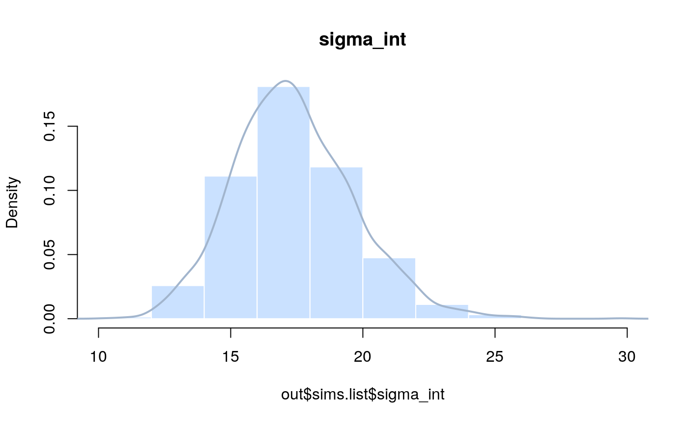
hist(out$sims.list$sigma_slope_prior, col = "lightsteelblue1", border = "white",
breaks = 10, freq = FALSE, main = "sigma_slope_prior")
lines(density(out$sims.list$sigma_slope_prior), col = "lightsteelblue3", lwd = 2)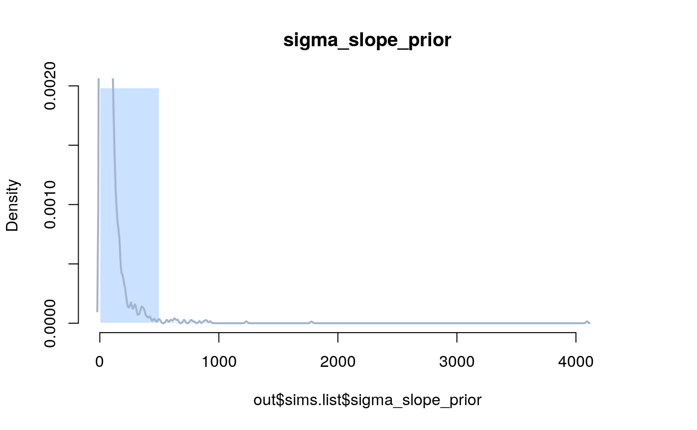
hist(out$sims.list$sigma_slope, col = "lightsteelblue1", border = "white", breaks = 10,
freq = FALSE, main = "sigma_slope")
lines(density(out$sims.list$sigma_slope), col = "lightsteelblue3", lwd = 2)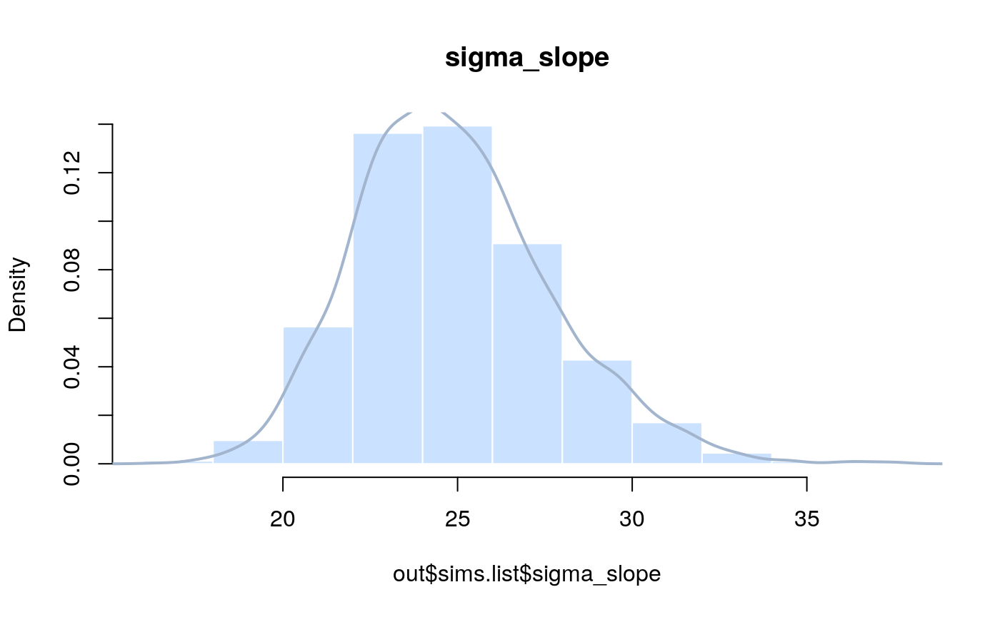
hist(out$sims.list$rho_int_slope_prior, col = "lightsteelblue1", border = "white",
breaks = 10, freq = FALSE, main = "rho_int_slope_prior")
lines(density(out$sims.list$rho_int_slope_prior), col = "lightsteelblue3", lwd = 2)
hist(out$sims.list$rho_int_slope, col = "lightsteelblue1", border = "white",
breaks = 10, freq = FALSE, main = "rho_int_slope")
lines(density(out$sims.list$rho_int_slope), col = "lightsteelblue3", lwd = 2)
Finally, we simulate data from a model with 3 correlated ranefs and then provide the R and JAGS analyses of this data
n_subjects <- 56
n_sample <- 10
n_obs <- n_subjects * n_sample
subjects <- gl(n = n_subjects, k = n_sample)
# Two standardized continuous covariates:
original_x1 <- runif(n_obs, 45, 70)
(mean_orig_x1 <- mean(original_x1))[1] 57.63993[1] 7.054903x1 <- (original_x1 - mean_orig_x1)/sd_orig_x1
original_x2 <- rgamma(n_obs, 10, 1)
(mean_orig_x2 <- mean(original_x2))[1] 9.881085[1] 3.075498x2 <- (original_x2 - mean_orig_x2)/sd_orig_x2
par(mfrow = c(1, 2))
hist(x1, col = "lightsteelblue1", border = "white", breaks = 15, freq = FALSE)
lines(density(x1), col = "lightsteelblue3", lwd = 2)
hist(x2, col = "lightsteelblue1", border = "white", breaks = 15, freq = FALSE)
lines(density(x2), col = "lightsteelblue3", lwd = 2)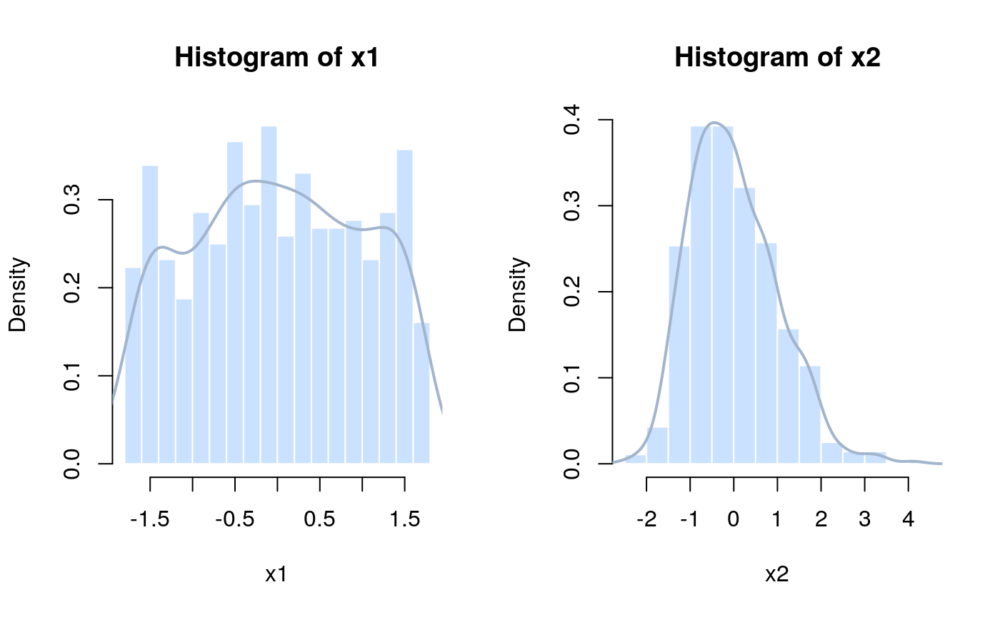
par(mfrow = c(1, 1))
# Design matrix:
Xmat <- model.matrix(~subjects * x1 + subjects * x2 - 1 - x1 - x2)
# Generate the correlated random effects for intercept and slope: Assembling
# the parameters for the multivariate normal distribution
intercept_mean <- 230
intercept_sd <- 20
slope1_mean <- 60
slope1_sd <- 30
slope2_mean <- 40
slope2_sd <- 25
intercept_slope1_covariance <- 10
intercept_slope1_correlation <- intercept_slope1_covariance/(intercept_sd *
slope1_sd)
intercept_slope2_covariance <- 300
intercept_slope2_correlation <- intercept_slope2_covariance/(intercept_sd *
slope2_sd)
slope1_slope2_covariance <- -200
slope1_slope2_correlation <- slope1_slope2_covariance/(slope1_sd * slope2_sd)
mu_vector <- c(intercept_mean, slope1_mean, slope2_mean)
var_covar_matrix <- matrix(c(intercept_sd^2, intercept_slope1_covariance, intercept_slope2_covariance,
intercept_slope1_covariance, slope1_sd^2, slope1_slope2_covariance, intercept_slope2_covariance,
slope1_slope2_covariance, slope2_sd^2), 3, 3)
eigen(var_covar_matrix)$values[1] 1039.4957 714.9788 170.5255# Generating the correlated random effects for intercepts and slopes:
library("MASS")
effects <- mvrnorm(n = n_subjects, mu = mu_vector, Sigma = var_covar_matrix)
str(effects) num [1:56, 1:3] 201 250 228 222 230 ...
- attr(*, "dimnames")=List of 2
..$ : NULL
..$ : NULLhist(effects[, 1], col = "lightsteelblue1", border = "white", breaks = 10, freq = FALSE)
lines(density(effects[, 1]), col = "lightsteelblue3", lwd = 2)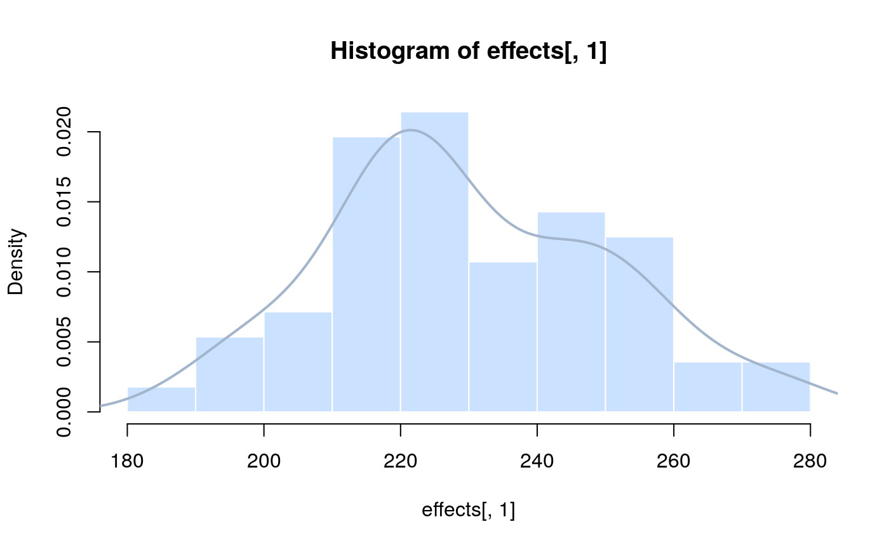
hist(effects[, 2], col = "lightsteelblue1", border = "white", breaks = 10, freq = FALSE)
lines(density(effects[, 2]), col = "lightsteelblue3", lwd = 2)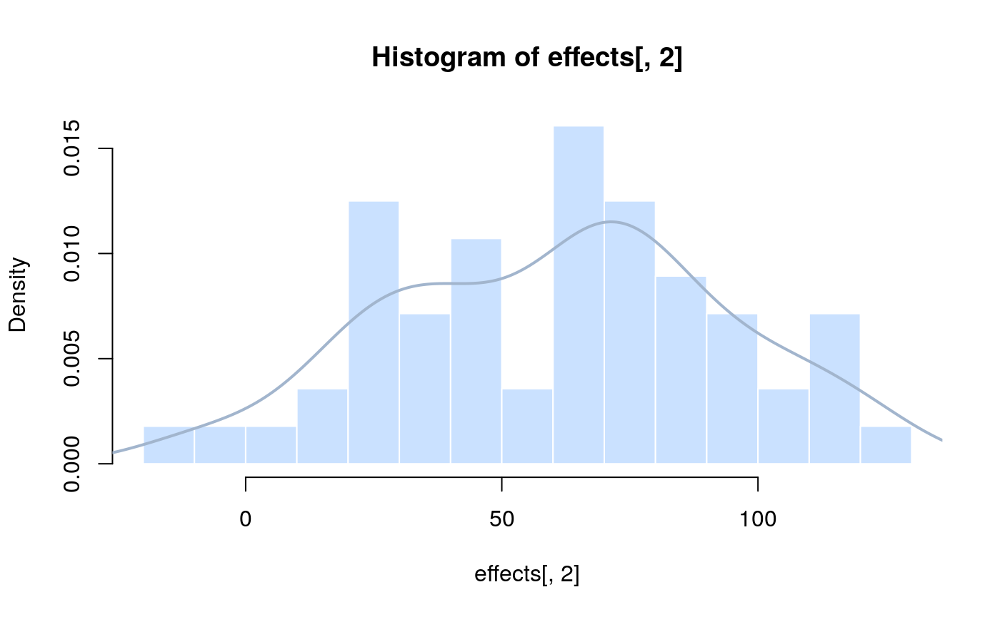
hist(effects[, 3], col = "lightsteelblue1", border = "white", breaks = 10, freq = FALSE)
lines(density(effects[, 3]), col = "lightsteelblue3", lwd = 2)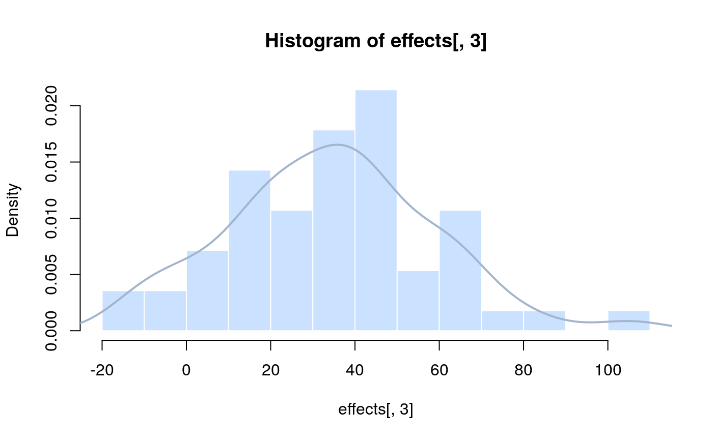
# Plotting the bivariate distributions:
effects_kde12 <- kde2d(effects[, 1], effects[, 2], n = 50)
effects_kde13 <- kde2d(effects[, 1], effects[, 3], n = 50)
effects_kde23 <- kde2d(effects[, 2], effects[, 3], n = 50)
image(effects_kde12)
contour(effects_kde12, add = T)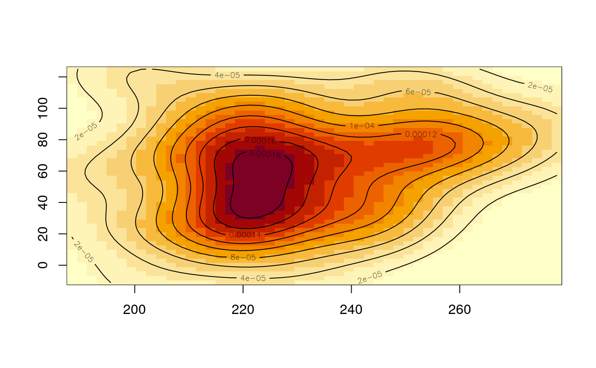
persp(effects_kde12, phi = 45, theta = -30, shade = 0.1, border = NULL, col = "lightsteelblue1",
ticktype = "detailed", xlab = "", ylab = "", zlab = "")

persp(effects_kde13, phi = 45, theta = -30, shade = 0.1, border = NULL, col = "lightsteelblue1",
ticktype = "detailed", xlab = "", ylab = "", zlab = "")

persp(effects_kde23, phi = 45, theta = -30, shade = 0.1, border = NULL, col = "lightsteelblue1",
ticktype = "detailed", xlab = "", ylab = "", zlab = "")
[1] 229.87384 61.04242 34.40549[1] 20.55603 32.79704 24.26273[1] 422.5503 1075.6456 588.6802[1] 148.2773[1] 310.1884[1] -38.48322 [,1] [,2] [,3]
[1,] 422.5503 148.27726 310.18836
[2,] 148.2773 1075.64563 -38.48322
[3,] 310.1884 -38.48322 588.68016sigma_res <- 30
population_parameters <- data.frame(intercept_mean = intercept_mean, slope1_mean = slope1_mean,
slope2_mean = slope2_mean, intercept_sd = intercept_sd, slope1_sd = slope1_sd,
slope2_sd = slope2_sd, intercept_slope1_covariance = intercept_slope1_covariance,
intercept_slope2_covariance = intercept_slope2_covariance, slope1_slope2_covariance = slope1_slope2_covariance,
sigma_res = sigma_res)
intercept_effects <- effects[, 1]
# round(intercept_effects, 2)
slope1_effects <- effects[, 2]
# round(slope1_effects, 2)
slope2_effects <- effects[, 3]
# round(slope2_effects, 2)
all_effects <- c(intercept_effects, slope1_effects, slope2_effects)
# Generate the response variable: -- the deterministic part
lin_pred <- Xmat %*% all_effects
# round(as.vector(lin_pred), 2)
# -- the stochastic part
sigma_res <- 30
normal_error <- rnorm(n = n_obs, mean = 0, sd = sigma_res) # residuals
# -- add them together
y <- lin_pred + normal_error
# or, in one go:
y <- rnorm(n = n_obs, mean = lin_pred, sd = sigma_res)
hist(y, col = "lightsteelblue1", border = "white", breaks = 15, freq = FALSE)
lines(density(y), col = "lightsteelblue3", lwd = 2)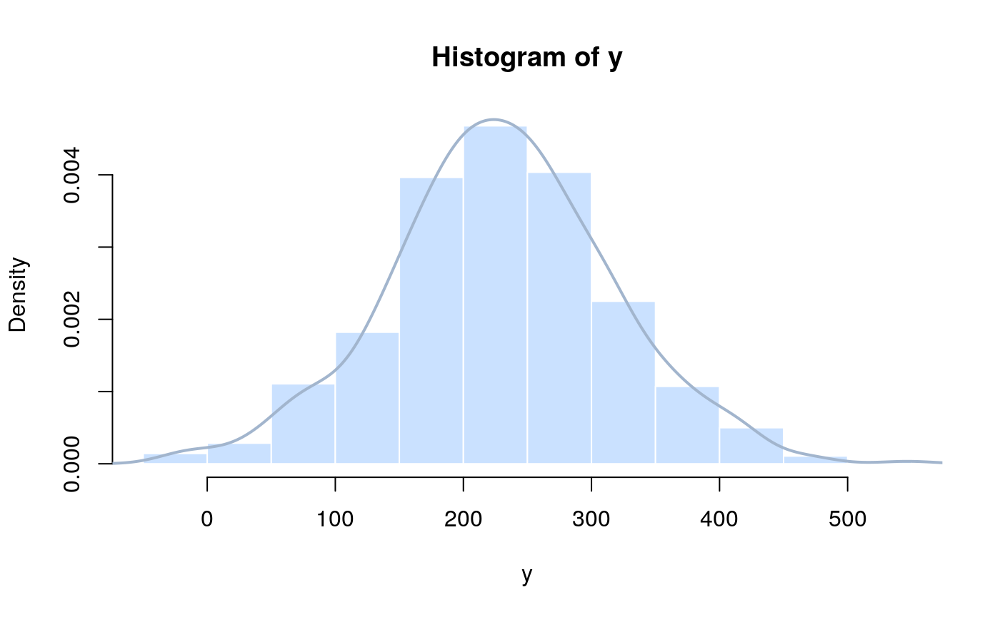

# REML analysis using R
library("lme4")
lme_fit4 <- lmer(y ~ x1 + x2 + (x1 + x2 | subjects))
print(lme_fit4, cor = FALSE)Linear mixed model fit by REML ['lmerMod']
Formula: y ~ x1 + x2 + (x1 + x2 | subjects)
REML criterion at convergence: 5671.607
Random effects:
Groups Name Std.Dev. Corr
subjects (Intercept) 19.14
x1 33.79 0.35
x2 24.19 0.58 -0.04
Residual 29.28
Number of obs: 560, groups: subjects, 56
Fixed Effects:
(Intercept) x1 x2
231.08 62.20 33.39 # Compare with the true values:
data.frame(intercept_mean = intercept_mean, slope1_mean = slope1_mean, slope2_mean = slope2_mean,
intercept_sd = intercept_sd, slope1_sd = slope1_sd, slope2_sd = slope2_sd,
intercept_slope1_covariance = intercept_slope1_covariance, intercept_slope2_covariance = intercept_slope2_covariance,
slope1_slope2_covariance = slope1_slope2_covariance, sigma_res = sigma_res) intercept_mean slope1_mean slope2_mean intercept_sd slope1_sd slope2_sd
1 230 60 40 20 30 25
intercept_slope1_covariance intercept_slope2_covariance
1 10 300
slope1_slope2_covariance sigma_res
1 -200 30# Bayesian analysis using a scaled Inverse Wishart
# Define model
cat("model {
# Set up the means for the multivariate ranef distribution
for (i in 1:3) {
xi[i]~dunif(0, 100)
mu_raw[i]~dnorm(0, .0001)
mu[i] <- xi[i]*mu_raw[i]
}
mu_int <- mu[1]
mu_slope1 <- mu[2]
mu_slope2 <- mu[3]
Tau_B_raw[1:3, 1:3] ~ dwish(W[,], 4)
Sigma_B_raw[1:3, 1:3] <- inverse(Tau_B_raw[,])
for (i in 1:3) {
sigma[i] <- xi[i]*sqrt(Sigma_B_raw[i, i])
}
sigma_int <- sigma[1]
sigma_slope1 <- sigma[2]
sigma_slope2 <- sigma[3]
for (i in 1:3) { for (j in 1:3) {
rho[i, j] <- Sigma_B_raw[i, j]/sqrt(Sigma_B_raw[i, i]*Sigma_B_raw[j, j])
} }
rho_int_slope1 <- rho[1, 2]
rho_int_slope2 <- rho[1, 3]
rho_slope1_slope2 <- rho[2, 3]
for (j in 1:n_subj) {
\tB_raw_hat[j, 1] <- mu_raw[1]
\tB_raw_hat[j, 2] <- mu_raw[2]
\tB_raw_hat[j, 3] <- mu_raw[3]
\tB_raw[j, 1:3] ~ dmnorm(B_raw_hat[j, ], Tau_B_raw[, ])
\talpha[j] <- xi[1]*B_raw[j, 1]
beta1[j] <- xi[2]*B_raw[j, 2]
beta2[j] <- xi[3]*B_raw[j, 3]
}
sigma_res~dunif(0, 100) # Residual standard deviation
tau_res <- 1/(sigma_res*sigma_res)
for (i in 1:n_obs) {
mu_obs[i] <- alpha[subjects[i]]+beta1[subjects[i]]*x1[i]+beta2[subjects[i]]*x2[i]
y[i]~dnorm(mu_obs[i], tau_res)
}
for (i in 1:3) {
xi_prior[i]~dunif(0, 100)
mu_raw_prior[i]~dnorm(0, .0001)
mu_prior[i] <- xi_prior[i]*mu_raw_prior[i]
}
mu_int_prior <- mu_prior[1]
mu_slope1_prior <- mu_prior[2]
mu_slope2_prior <- mu_prior[3]
Tau_B_raw_prior[1:3, 1:3] ~ dwish(W[,], 4)
Sigma_B_raw_prior[1:3, 1:3] <- inverse(Tau_B_raw_prior[,])
for (i in 1:3) {
sigma_prior[i] <- xi_prior[i]*sqrt(Sigma_B_raw_prior[i, i])
}
sigma_int_prior <- sigma_prior[1]
sigma_slope1_prior <- sigma_prior[2]
sigma_slope2_prior <- sigma_prior[3]
for (i in 1:3) { for (j in 1:3) {
rho_prior[i, j] <- Sigma_B_raw_prior[i, j]/sqrt(Sigma_B_raw_prior[i, i]*Sigma_B_raw_prior[j, j])
} }
rho_int_slope1_prior <- rho_prior[1, 2]
rho_int_slope2_prior <- rho_prior[1, 3]
rho_slope1_slope2_prior <- rho_prior[2, 3]
}",
fill = TRUE, file = "lme_model5.txt")
# Bundle data
jags_data <- list(y = as.numeric(y), subjects = as.numeric(subjects), x1 = as.numeric(x1),
x2 = as.numeric(x2), n_subj = max(as.numeric(subjects)), n_obs = as.numeric(n_obs),
W = diag(3))
# install.packages('bayesm')
library("bayesm")
var_vec <- apply(coef(lme_fit4)$subjects, 2, var)
# Inits function
inits <- function() {
list(xi = rlnorm(3), mu_raw = rnorm(3), Tau_B_raw = rwishart(4, diag(3) *
var_vec)$W, sigma_res = rlnorm(1), xi_prior = rlnorm(3), mu_raw_prior = rnorm(3),
Tau_B_raw_prior = rwishart(4, diag(3) * var_vec)$W)
}
# Parameters to estimate
params <- c("mu", "mu_int", "mu_slope1", "mu_slope2", "sigma", "sigma_int",
"sigma_slope1", "sigma_slope2", "rho", "rho_int_slope1", "rho_int_slope2",
"rho_slope1_slope2", "alpha", "beta1", "beta2", "sigma_res", "mu_int_prior",
"mu_slope1_prior", "mu_slope2_prior", "sigma_int_prior", "sigma_slope1_prior",
"sigma_slope2_prior", "rho_prior", "rho_int_slope1_prior", "rho_int_slope2_prior",
"rho_slope1_slope2_prior")
# MCMC settings
ni <- 7000
nb <- 1000
nt <- 6
nc <- 3 # more than this probably needed for a good approx. of the posterior distribution
# Start Gibbs sampler
library("R2jags")
outj <- jags(jags_data, inits = inits, parameters.to.save = params, model.file = "lme_model5.txt",
n.thin = nt, n.chains = nc, n.burnin = nb, n.iter = ni)Compiling model graph
Resolving undeclared variables
Allocating nodes
Graph information:
Observed stochastic nodes: 560
Unobserved stochastic nodes: 71
Total graph size: 4494
Initializing model# traceplot(outj)
## print(outj, dig = 3)
out <- outj$BUGSoutput
# Compare with MLEs and true values
print(out$mean, dig = 4)$alpha
[1] 217.8 243.4 238.6 227.2 229.3 227.6 262.9 210.9 199.6 225.6 203.8
[12] 223.0 206.7 232.5 209.0 245.7 211.9 232.6 262.6 231.9 219.7 272.6
[23] 230.0 224.4 233.6 223.1 210.2 224.0 221.8 232.6 223.9 225.6 229.4
[34] 227.2 221.5 237.5 206.8 243.8 247.3 229.0 260.6 248.8 211.7 230.9
[45] 258.2 256.2 215.1 239.1 229.9 242.6 238.9 229.7 221.8 223.6 255.4
[56] 254.4
$beta1
[1] 111.7706 42.8630 82.1078 32.7960 54.5385 109.1419 101.9165
[8] 88.9700 32.7472 31.3557 119.7079 95.3456 16.4265 38.6030
[15] 4.9853 64.3551 22.0070 71.8977 94.2167 51.4323 87.5317
[22] 90.9158 39.9554 0.3494 6.8205 64.4347 10.8259 56.1589
[29] 30.7533 63.1827 67.1525 34.1163 101.7915 8.2188 77.0835
[36] 52.0454 68.1745 72.9775 82.1459 45.1824 67.0325 78.2213
[43] 3.9950 96.4582 124.0805 107.7060 78.3983 56.1488 52.3290
[50] 72.1807 51.2117 54.6774 69.6350 58.9315 77.0949 109.9637
$beta2
[1] 1.495 30.951 -1.527 45.784 60.154 26.616 57.780 -8.824
[9] 13.138 21.536 4.693 5.571 4.083 30.786 39.046 47.623
[17] 20.868 33.159 53.691 26.983 -11.101 98.981 63.403 31.652
[25] 42.240 17.734 19.095 38.448 62.040 49.460 35.611 12.260
[33] 22.440 39.959 4.306 28.573 15.403 29.607 51.533 46.012
[41] 66.301 35.592 30.617 26.340 61.084 57.625 4.595 40.725
[49] 61.073 39.075 46.516 49.900 8.016 37.354 47.036 44.776
$deviance
[1] 5383
$mu
[1] 231.09 62.21 33.35
$mu_int
[1] 231.1
$mu_int_prior
[1] -61.96
$mu_slope1
[1] 62.21
$mu_slope1_prior
[1] -131.8
$mu_slope2
[1] 33.35
$mu_slope2_prior
[1] -135.9
$rho
[,1] [,2] [,3]
[1,] 1.0000 0.35050 0.58131
[2,] 0.3505 1.00000 -0.03531
[3,] 0.5813 -0.03531 1.00000
$rho_int_slope1
[1] 0.3505
$rho_int_slope1_prior
[1] 0.003383
$rho_int_slope2
[1] 0.5813
$rho_int_slope2_prior
[1] -0.003807
$rho_prior
[,1] [,2] [,3]
[1,] 1.000000 0.003383 -0.003807
[2,] 0.003383 1.000000 -0.015150
[3,] -0.003807 -0.015150 1.000000
$rho_slope1_slope2
[1] -0.03531
$rho_slope1_slope2_prior
[1] -0.01515
$sigma
[1] 18.35 34.18 24.07
$sigma_int
[1] 18.35
$sigma_int_prior
[1] 62.34
$sigma_res
[1] 29.63
$sigma_slope1
[1] 34.18
$sigma_slope1_prior
[1] 62.59
$sigma_slope2
[1] 24.07
$sigma_slope2_prior
[1] 65.64data.frame(intercept_mean = intercept_mean, slope1_mean = slope1_mean, slope2_mean = slope2_mean,
intercept_sd = intercept_sd, slope1_sd = slope1_sd, slope2_sd = slope2_sd,
intercept_slope1_covariance = intercept_slope1_covariance, intercept_slope2_covariance = intercept_slope2_covariance,
slope1_slope2_covariance = slope1_slope2_covariance, sigma_res = sigma_res) intercept_mean slope1_mean slope2_mean intercept_sd slope1_sd slope2_sd
1 230 60 40 20 30 25
intercept_slope1_covariance intercept_slope2_covariance
1 10 300
slope1_slope2_covariance sigma_res
1 -200 30Linear mixed model fit by REML ['lmerMod']
Formula: y ~ x1 + x2 + (x1 + x2 | subjects)
REML criterion at convergence: 5671.607
Random effects:
Groups Name Std.Dev. Corr
subjects (Intercept) 19.14
x1 33.79 0.35
x2 24.19 0.58 -0.04
Residual 29.28
Number of obs: 560, groups: subjects, 56
Fixed Effects:
(Intercept) x1 x2
231.08 62.20 33.39 data.frame(intercept_mean = intercept_mean, slope1_mean = slope1_mean, slope2_mean = slope2_mean,
intercept_sd = intercept_sd, slope1_sd = slope1_sd, slope2_sd = slope2_sd,
intercept_slope1_covariance = intercept_slope1_covariance, intercept_slope2_covariance = intercept_slope2_covariance,
slope1_slope2_covariance = slope1_slope2_covariance, sigma_res = sigma_res) intercept_mean slope1_mean slope2_mean intercept_sd slope1_sd slope2_sd
1 230 60 40 20 30 25
intercept_slope1_covariance intercept_slope2_covariance
1 10 300
slope1_slope2_covariance sigma_res
1 -200 30 [,1] [,2] [,3]
[1,] 1.00 0.350 0.581
[2,] 0.35 1.000 -0.035
[3,] 0.58 -0.035 1.000 [,1] [,2] [,3]
[1,] 0.00 0.14 0.13
[2,] 0.14 0.00 0.15
[3,] 0.13 0.15 0.00